More than 1 million immigrants arrive in the U.S. each year.
Without domestic credit history, a recent immigrant is not allowed access to domestic credit products. They are expected to start over -- even when they might have a perfectly good financial history abroad.
Let's tear down that wall.
Now, given that introduction, you may be asking, "What wall?"
For various reasons (historical, jurisdictional, and technological), the credit rating systems in each country are isolated and separate. This seems counter-intuitive in the age of global finance, but where corporate finance has a long history of cross-pollination, personal finance does not. It's taken nothing less than the advent of the internet to finally make this omission grossly obvious.
It's surely time to fix this problem, and thankfully the world community is developing the tools to do so. In the EU, the European Commission created the Revised Payment Services Directive (PSD2) to exert pressure on financial institutions to provide consumers not only additional protections and rights, but also enhanced ownership and transparency into their own financial data.
This in turn spurred the development of the Open Banking initiative to provide the requisite transparency by encouraging the creation of open technology tools, particularly APIs. Both PSD2 and Open Banking were designed to create new opportunities for innovation in financial technologies and services -- and this is indeed the opportunity upon which we are building.
The Open Banking initiative has seen the advent of Account Information Service Providers (AISP). The goal of the AISPs is to provide uniform open banking APIs for the majority of financial institutions in a certain region. By leveraging these service providers to perform the first step of integration and normalization, we don't need to make a unique connection to every bank in the world.

On the other hand, there are a few significant caveats regarding these AISPs. First, they do not agree themselves on any common data schema. Any integration to one of these providers is unique. Second, it is not their purpose to provide value-added features. Their purpose is to provide account information. It is our job to do something interesting and useful with it.
With this in mind, we hope you'll be interested to leanr more about our product.
Contact us at ifinn@civizmundi.com.